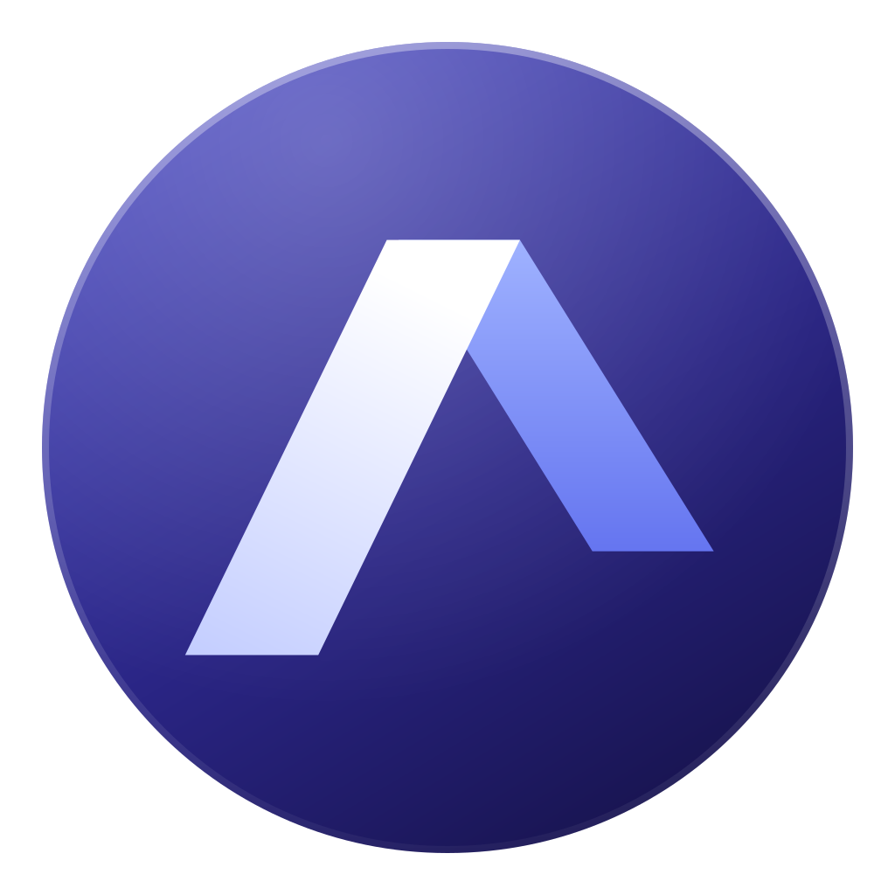

Zirkumflex
A shared starting point for Zirkumflex projects. Logo, colours, type and shape, first worked out in Flexspeak.
bun add github:zirkumflex-group/brand
Logo
The circumflex of Zirkumflex as a folded ribbon. The right leg runs down from behind the left leg's top, so the caret reads as one strip. In one colour the back leg is drawn at 60%, so the fold still shows.

Files


Logo colours
The badge is a deeper indigo than the interface accent. Use these colours for the logo only. The interface uses the palette below.
Colour
Colour carries meaning. The neutrals lean a little toward the accent's blue, so panels don't read as plain grey. The default palette keeps primary text at 7:1 or better, muted text and the accent at 4.5:1, and faint text and status colours at 3:1. Keep those ratios when you change a colour.
Point at a colour below to see where the window uses it. Colours this window doesn't show have no pointer.
Surfaces and text
Status and data
Type and shape
Inter is the default for interface text, with tabular figures for numbers that change in place. A project may bring a display face of its own.
Radius
Motion
Springs, not curves. Quick, 0.22 s, for hover and press. Settle, 0.38 s with a slight bounce, for panels. Reading, 0.45 s, for colours that follow data. Use motion to show what changed, and respect reduced motion.
How it should feel
Defaults, not laws. Bend them where a project's medium needs it, and keep the family resemblance.
- Colour carries meaning.The accent marks the main action, focus and selection. Green, amber and red are for status, so they don't double as decoration.
- Structure before boxes.Reach for space, a heading or a hairline first. Use a card when something really stands alone, and save shadows for things that float.
- Calm by default.Short, plain labels and little decoration. Pick the density that suits the medium: 28 px controls on a desktop, bigger targets on touch.
- Honest state.Data that is stale or unknown never looks healthy.
- Make it yours.A project can choose its own accent and tint the neutrals toward it, add a display face, or change radius and density. Keep the mark and what the status colours mean, so it still reads as family.
Use it
Web apps import the CSS. Everything else reads tokens.json.
Add the package
bun add github:zirkumflex-group/brand
Plain CSS
@import "@zirkumflex/brand/tokens.css";
body {
background: var(--zx-canvas);
color: var(--zx-text);
font-family: var(--zx-font-sans);
}
.button-primary { background: var(--zx-accent); color: var(--zx-on-accent); }
shadcn/ui or Tailwind v4
@import "tailwindcss"; @import "@zirkumflex/brand/tokens.css"; @import "@zirkumflex/brand/shadcn.css"; /* --background, --primary, --border … */
Dark is the default. Put class="light" or data-theme="light" on <html> for the light palette, or data-theme="system" to follow the OS.
Anything else
Swift, Rust and scripts read tokens.json. The logos are plain SVG files in logo/. Load Inter from Google Fonts or bundle it.